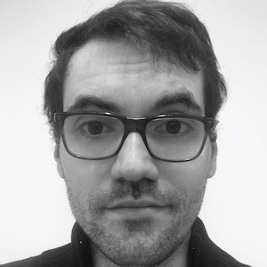

🚀 We are hiring! Multiple Postdoc and Permanent positions are available within my group.
(Please note: Due to lab security requirements, these positions are open to European nationals only).
Contact me if you are interested!
|
Gianni Franchi
I am a Research Director at AMIAD, where I lead the Trustworthy AI group.
Our research focuses on Uncertainty Quantification, Explainable AI (XAI), Model Attacks, Prompt Injection,
Cybersecurity, and Deepfake Detection.
In addition to my research leadership, I am a Professor at ENSTA Paris
(Institut Polytechnique de Paris), where I teach
most of these topics to the next generation of AI engineers and researchers.
I also represent the AI Jean Zay user council.
I earned my PhD in 2016 from Mines de Paris under the mentorship of Jesus Angulo,
focusing on Fusion of Information, Machine Learning, and Image Processing.
Email /
CV /
Scholar /
Twitter /
Github
|

|
Research & Societal Impact
My work is dedicated to building Trustworthy AI. As AI systems become integrated into
the fabric of society—from autonomous driving to healthcare and national security—it is vital that
these systems are not only high-performing but also reliable, transparent, and secure.
Our group works on:
- Uncertainty Quantification: Ensuring models "know when they don't know," preventing overconfident but wrong decisions.
- XAI: Making black-box models interpretable for human experts.
- Model Security: Defending against adversarial attacks, prompt injections, and deepfakes to protect digital integrity and democratic discourse.
I'm currently involved in the development of Torch Uncertainty, a PyTorch library
tailored for uncertainty quantification. Contributions are welcome!
Current PhD Students
- 2022–2025, Rémi Kazmierczak, co-advised with Eloïse Berthier, Goran Frehse, topic: XAI and foundation models
- 2022–2025, Olivier Laurent, co-advised with Adrien Chan Hon Tong, Emanuel Aldea, topic: Uncertainty and Deep Learning
- 2022–2025, Adrien Lafage, co-advised with Mathieu Barbier, David Filliat, topic: Uncertainty and trajectory forecasting
- 2022–2025, Mouïn Ben Ammar, co-advised with Arturo Mendoza Quispe, Antoine Manzanera, topic: Anomaly and Out of Distribution detection
- 2025–Present, Firas Gabetni, co-advised with Goran Frehse, topic: Covariate shift detection and Uncertainty Quantification
- 2025-Present, Joseph Hoche, co-advised with Michaël Krajecki, topic: Uncertainty Quantification and Multimodal Large Language Model (MLLM)
- 2025-Present, Emirhan Bilgiç, co-advised with Zhi YAN, Baptiste Caramiaux, topic: XAI and Human Computer Interaction (HCI)
Alumni Students
- 2020–2023, Xuanlong Yu, co-advised with Emanuel Aldea
Postdocs
Positions available — see highlight at top of page.
Alumni Postdocs
- 2023–2024, Antoine Guillaume
- 2023–2024, Sebastian POPESCU
|
|
{kind=link}